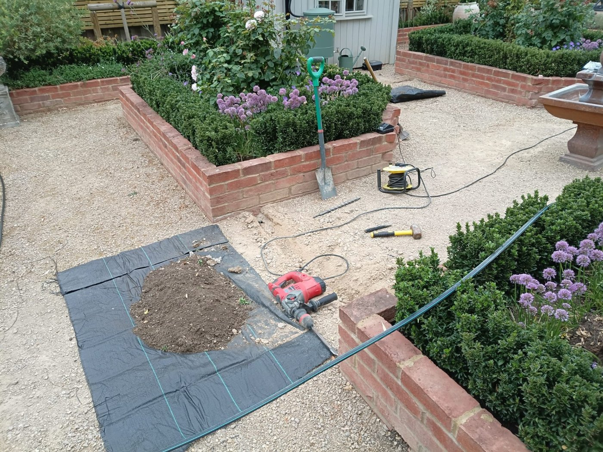
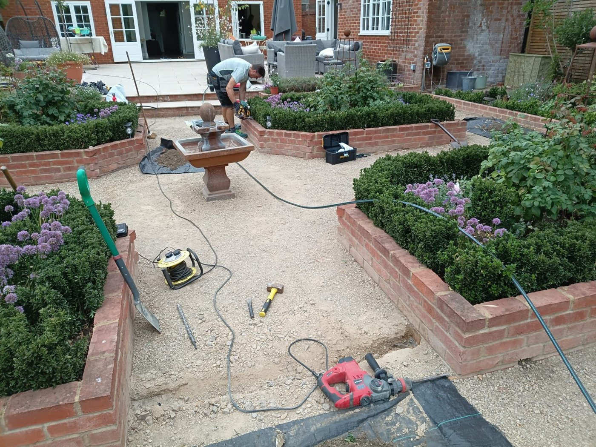
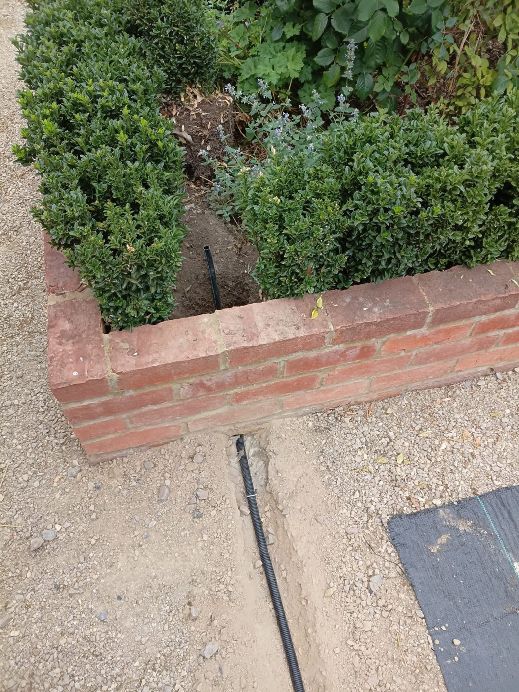
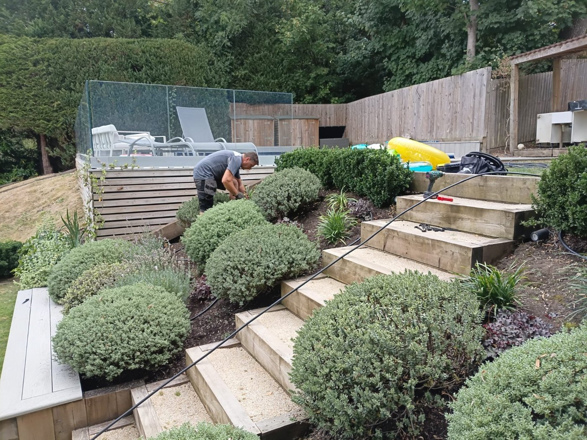
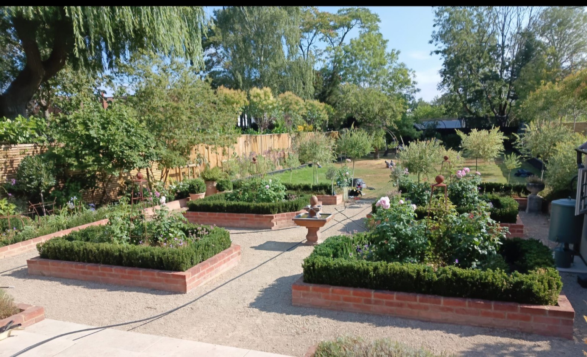
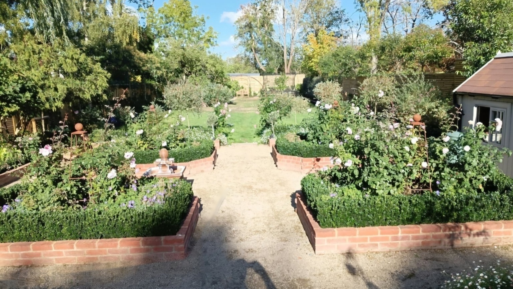
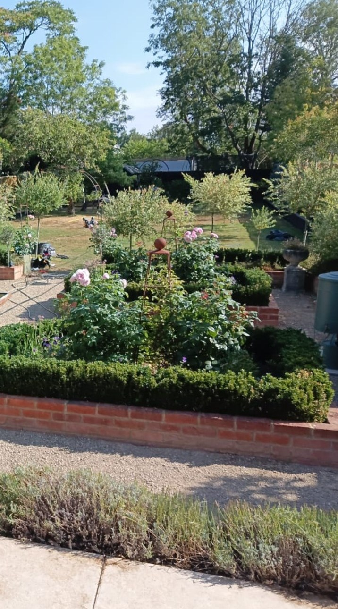
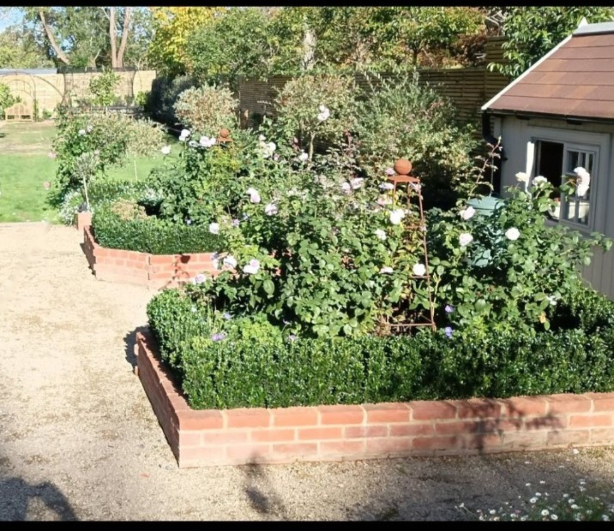

Rob & Tom
Our Work
A closer look at our garden irrigation installations — from the work behind the scenes to the gardens enjoying the benefits.
Our Installations
Real projects, real gardens. Explore how we install carefully planned watering systems, step by step.











See the Difference
See how gardens develop over time, with photographs taken during installation and again after the watering system has been in use.
At Installation
After Installation






Let's talk about your garden
Contact Rob & Tom to discuss an irrigation system tailored to your garden.